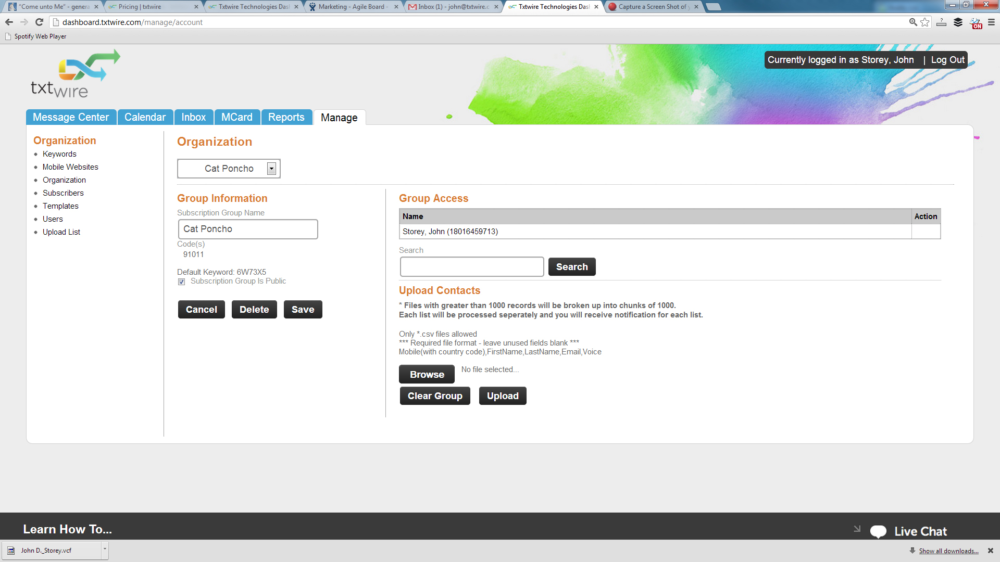
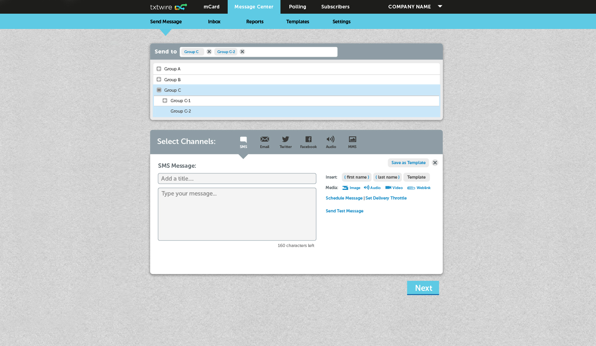

Old Site Example

New Site Sample

Sadly, they didn't have any developers assigned soley to front-end development and almost all of my initiateves related to implementing dashboard improvements were put on hold to focus on user stories to improve service to their higher revenue customers. I was still able to provide value by setting up event/goal tracking on our site along with re-marketing campaigns such as AdRoll, but results are not definite. The designs you see here have not been implemented into production code yet.
One initiative that did get executed was our mobile app that enabled customers to send group messages to their subsciber lists. When I left to attend Dev Mountain they were working on implementing our newly designed account setting pages with options to upgrade or downgrade your account.
My Time as VP of Marketing
I had started a business selling text message packages to restaurants and found my way to Txtwire through my business dealings. Txtwire is a SMS company that sends approx 11-13M text messages monthly, largely through their API. I worked extensively with segmenting and engaging their non-enterprise markets. Because of the nature of their business I spent a large portion of my time designing, conducting user tests, and improving the principal dashboard's UI.
We were getting a LOT of customer service calls in regards to helping people with the setup of their mCard (a mobile business card product). We initially started doing a massive re-design of the way people signed up, then decided to test a new form versus putting a tutorial video at the beginning of the process. The tutorial video won out and we saved lots of time for our developers as well as our customer service reps.
We had a super high bounce rate on our landing page. We came up with a competing design and using google analytics ran A/B split tests. The page with a video had a much better engagement rate so we started making videos for our different segments.
Sadly, they didn't have any developers assigned soley to front-end development and almost all of my initiateves related to implementing dashboard improvements were put on hold to focus on user stories to improve service to their higher revenue customers. I was still able to provide value by setting up event/goal tracking on our site along with re-marketing campaigns such as AdRoll, but results are not definite. The designs you see here have not been implemented into production code yet.
"Designers don't know what users want... only the actual users do. If there is something to be solved we can give our best guess, but the real fountain of knowledge isn't in asking the designer or developer, it's in testing for user behavior. " John D. Storey (me)